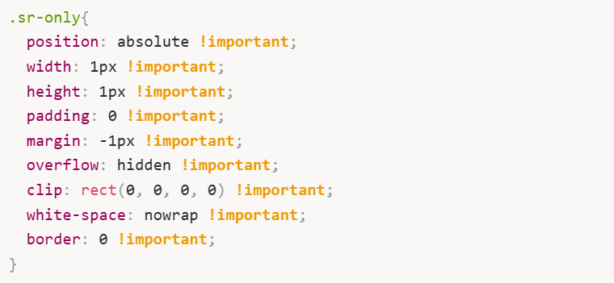
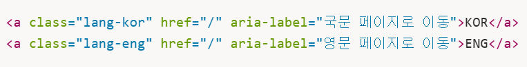
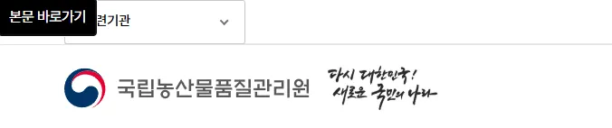
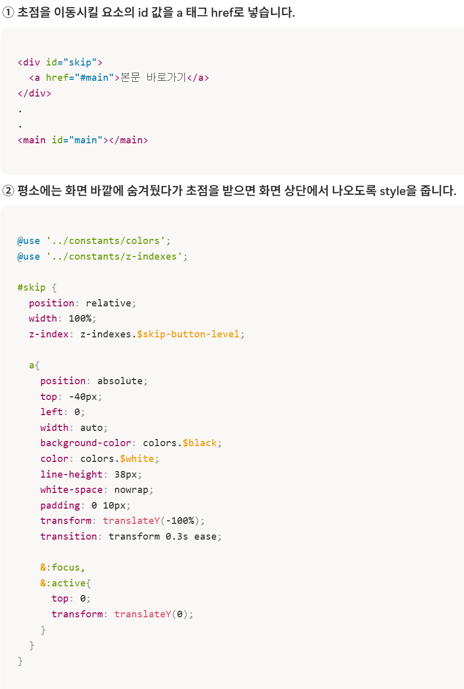
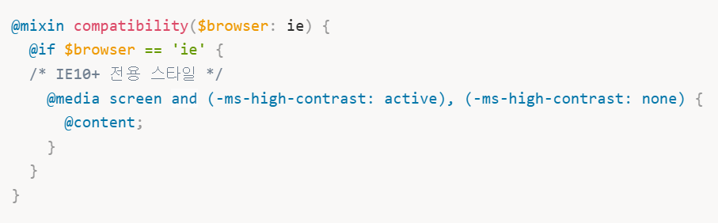
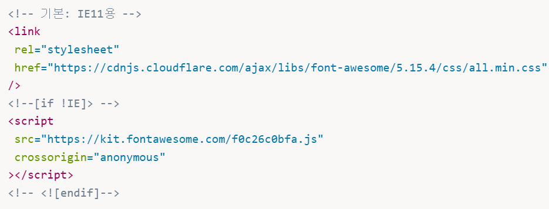

국립농산물품질관리원
구현 기술
-
스크린 리더 사용자를 위해 .sr-only 클래스, aria-label 속성을 사용하여 설명을 보충하였습니다.


-
본문 바로가기 버튼을 추가하여 해당 링크에서 엔터를 누르면 바로 본문으로 건너띄도록 구현하였습니다.


-
스크린 리더 사용자가 몇 번째 슬라이드인지 알 수 있도록 aria-live="polite" 속성을 추가하여 알림 기능을 제공하였습니다.
-
탭 메뉴에 키보드 이벤트 리스너를 추가하여 키보드 만으로도 편리하게 이용할 수 있도록 하였습니다.
-
IE11 환경에서만 별도의 스타일을 적용하기 위해, 전용 믹스인(Mixin)을 만들어 관리했습니다.

-
일부 라이브러리의 최신 버전은 IE를 지원하지 않기 때문에, 조건부 주석을 사용하여 IE에서는 구버전, 그 외 브라우저에서는 최신 버전 CDN을 적용하였습니다.

트러블 슈팅
IE 환경에서 ES6+ 문법을 사용한 자바스크립트 코드가 정상적으로 동작하지 않는 문제가 발생했습니다.
Babel과 Webpack을 활용하여 트랜스파일링 및 번들링 환경을 구성했습니다.
-
Babel을 사용하여 ES6+ 문법으로 작성된 자바스크립트 코드를 IE에서도 실행 가능한 ES5 문법으로 트랜스파일링했습니다.
-
Polyfill을 적용하여 IE에서 지원하지 않는 ES6 이후에 추가된 Fetch API를 보완했습니다.
-
Webpack의 babel-loader를 사용해 자바스크립트 파일을 빌드 단계에서 자동으로 트랜스파일링할 수 있도록 설정하고, 여러 모듈로 분리된 코드를 하나의 번들 파일로 묶었습니다.
-
ES6+ 문법으로 작성된 자바스크립트 코드가 IE 환경에서도 문제없이 실행되도록 개선되었습니다.
-
여러 개의 자바스크립트 파일을 단일 번들 파일로 관리하여 HTTP 요청 수를 줄이고 리소스 로딩 효율을 향상시켰습니다.